처마 끝 수막새 #58
처마 끝 수막새 #58표지만 있음 가까운 스타일: 전통 공예·문양
역사 · 문화 · 지역을 다루는 격식 있는 자리
10장 세트 · 검증된 세트 10장 예시 · 다른 주제 시험 · 넘침 검사를 통과 · 확인한 날 2026-11-13
화면을 누르거나 → 키로 넘깁니다. 새 창에서 크게 보기
내려받은 파일은 글꼴 · 그림이 안에 들어 있어 인터넷 없이 열립니다. AI가 새로 만든 발표는 열 때 인터넷이 필요합니다.
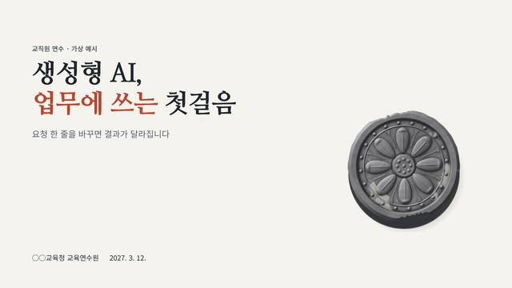
1. 표지2. 목차 · 전체 흐름 · 줄 목록3. 핵심 개념 · 낱말과 뜻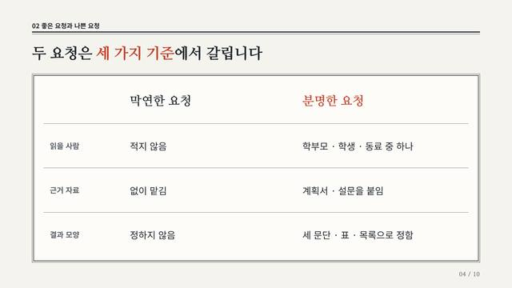
4. 비교 · 기준별 두 열5. 순서 · 절차 · 단계 표6. 사례 · 사람의 말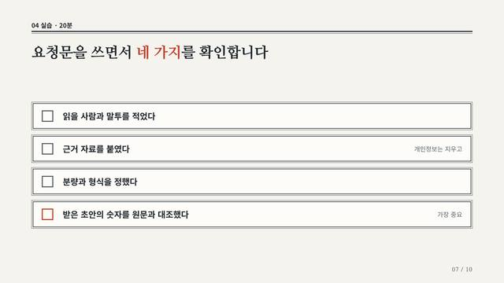
7. 실습 · 체크 목록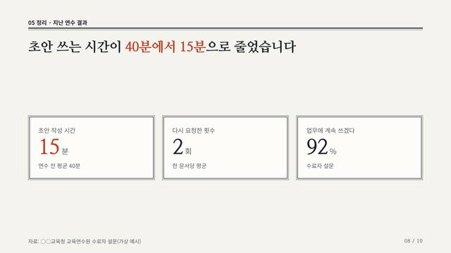
8. 핵심 수치 · 숫자 셋9. 요약 · 네 칸 정리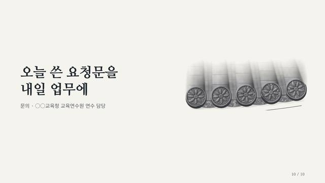
10. 마무리이 스타일의 짜임 · 목차 = 줄 목록 / 핵심 개념 = 낱말과 뜻 / 비교 = 기준별 두 열 / 순서 = 단계 표 / 사례 = 사람의 말 / 실습 과제 = 체크 목록 / 핵심 수치 = 숫자 셋 / 요약 = 네 칸 정리. 스타일마다 구성 조합이 다릅니다.
파란 테두리가 위 10장 예시에 쓴 구성입니다. 나머지 둘도 이 스타일로 그대로 쓸 수 있습니다. 구성 모음 넘겨 보기
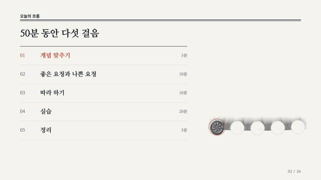
줄 목록 이 예시에 씀번호 · 이름 · 시간이 한 줄씩, 옆에 스타일의 상징
이럴 때 · 차례만 알리면 될 때. 가장 무난하다
분량 · 3~5줄
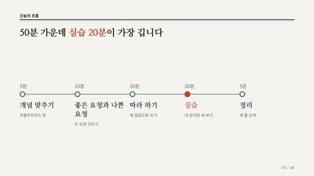
가로 이정표가로선 위에 점을 찍고 시간 · 이름 · 한 줄
이럴 때 · 시간 배분이나 날짜가 중요할 때
분량 · 3~5개
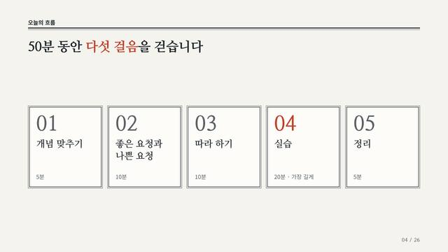
번호 카드큰 번호가 붙은 카드를 가로로 나란히
이럴 때 · 단계마다 이름을 또렷이 기억시키고 싶을 때
분량 · 3~5칸
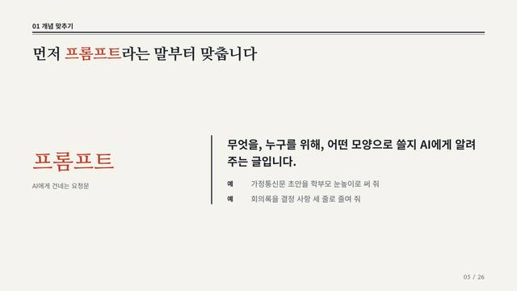
낱말과 뜻 이 예시에 씀왼쪽에 낱말, 오른쪽에 뜻 한 문장과 예
이럴 때 · 낯선 낱말 하나를 사전처럼 풀 때
분량 · 낱말 1 + 뜻 1문장 + 예 1~2
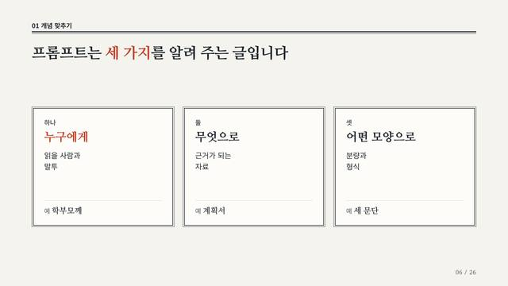
세 요소로 풀기개념을 이루는 요소를 카드 셋으로
이럴 때 · 개념이 몇 가지 요소로 이루어져 있을 때
분량 · 2~4칸, 칸마다 3줄 이하
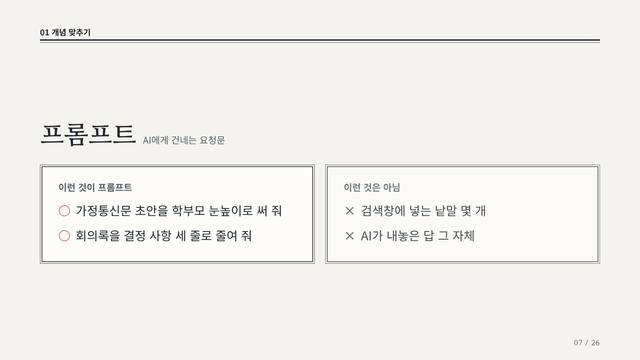
맞는 예와 아닌 예위에 낱말, 아래 두 칸에 ○ 예와 × 예
이럴 때 · 자주 헷갈리는 것과 선을 그어야 할 때
분량 · 쪽마다 예 2~3개
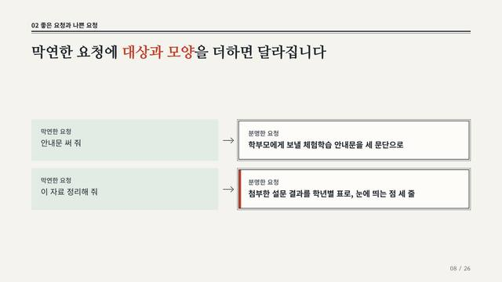
짝 줄줄마다 왼쪽 → 오른쪽 한 짝
이럴 때 · 같은 것을 이렇게 바꾸라고 보여 줄 때
분량 · 2~3줄
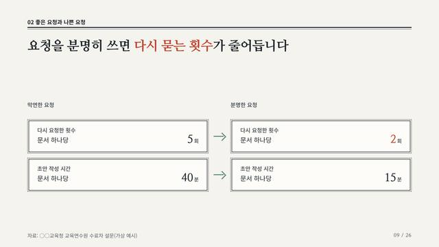
전과 후 수치같은 지표의 숫자를 좌우에 크게
이럴 때 · 두 쪽을 숫자로 견줄 수 있을 때
분량 · 2~3짝, 같은 단위
기준별 두 열 이 예시에 씀기준 | 왼쪽 | 오른쪽 세 열의 대조표
이럴 때 · 여러 기준으로 두 대상을 따질 때
분량 · 기준 3~4줄, 칸마다 1줄
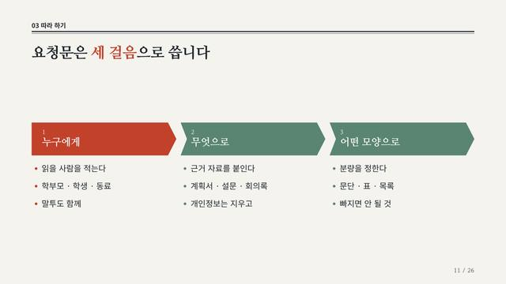
가로 세 칸단계마다 한 칸, 칸 안에 할 일 목록
이럴 때 · 단계마다 할 일이 여러 줄일 때
분량 · 3~4단계, 단계마다 3줄 이하
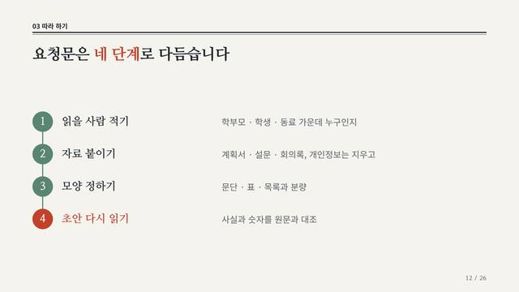
세로 단계번호 동그라미를 세로선으로 잇고 이름 + 한 줄
이럴 때 · 단계가 4~5개이고 단계마다 한 줄이면 될 때
분량 · 3~5단계, 단계마다 1줄
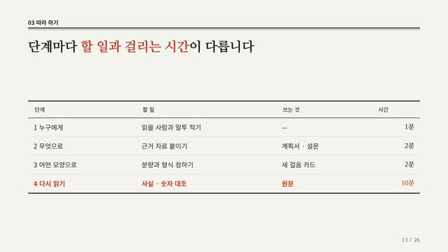
단계 표 이 예시에 씀단계 | 할 일 | 쓰는 것 | 시간의 표
이럴 때 · 단계마다 같은 항목(담당 · 도구 · 시간)을 견줄 때
분량 · 3~5행 × 3~4열
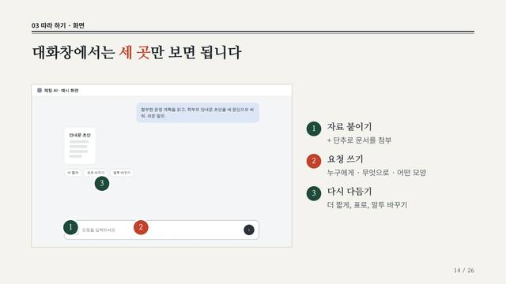
화면 짚기캡처 한 장에 번호를 찍고 옆에 설명
이럴 때 · 실제 화면의 어디를 누르는지 보여 줄 때
분량 · 캡처 1장 + 번호 3개 이하
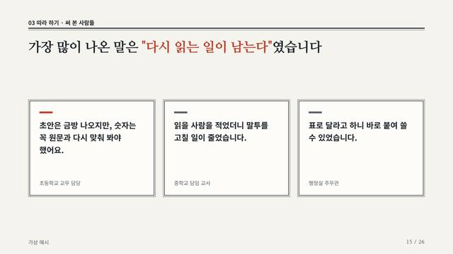
사람의 말 이 예시에 씀말 풍선 세 개, 가장 중요한 말 하나를 강조
이럴 때 · 화면이 없고 써 본 사람의 말이 있을 때
분량 · 1~3개, 각 60자 이하
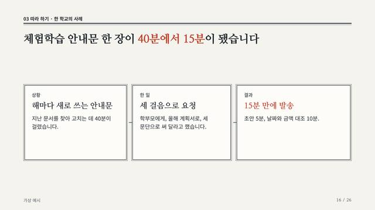
한 건 이야기상황 → 한 일 → 결과 세 칸
이럴 때 · 한 사례를 처음부터 끝까지 들려줄 때
분량 · 세 칸, 칸마다 이름 + 2줄
할 일 한 문장을 크게, 아래에 시간 · 결과물 · 도움
이럴 때 · 과제가 하나이고 조건을 알려야 할 때
분량 · 한 문장 + 조건 2~3칸
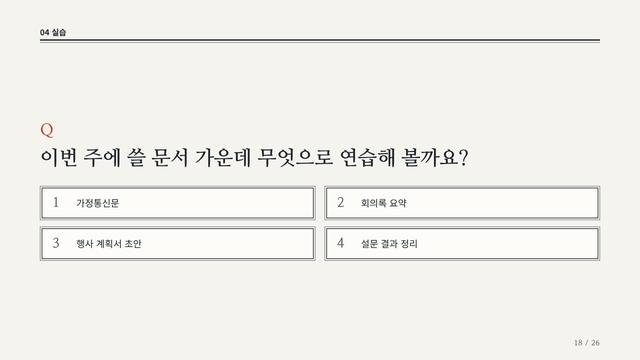
질문과 보기질문 하나와 고를 보기 넷
이럴 때 · 하기 전에 먼저 고르거나 생각하게 할 때
분량 · 질문 1 + 보기 4개 이하
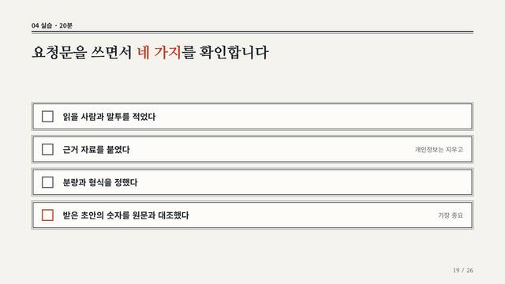
체크 목록 이 예시에 씀네모 칸이 달린 확인 목록
이럴 때 · 하면서 스스로 확인할 것이 여럿일 때
분량 · 3~5줄
숫자 타일 셋을 나란히
이럴 때 · 받치는 숫자가 둘 이상일 때
분량 · 2~4개, 숫자마다 단위 + 한 줄
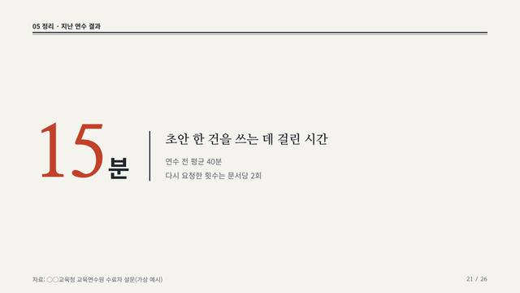
숫자 하나 크게왼쪽에 아주 큰 숫자 하나, 오른쪽에 뜻과 받치는 두 줄
이럴 때 · 기억시킬 숫자가 딱 하나일 때
분량 · 숫자 1 + 뜻 1문장 + 2줄
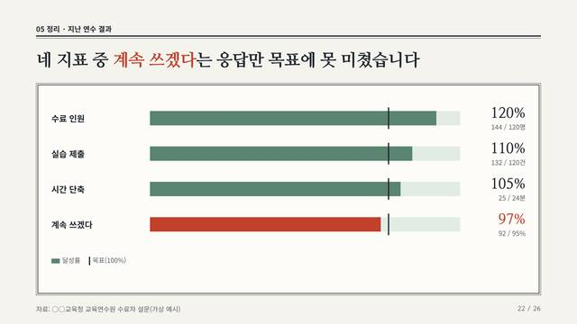
목표 대비 막대지표마다 막대와 목표선
이럴 때 · 여러 지표의 달성 정도를 견줄 때
분량 · 3~5줄, 한 가지 단위
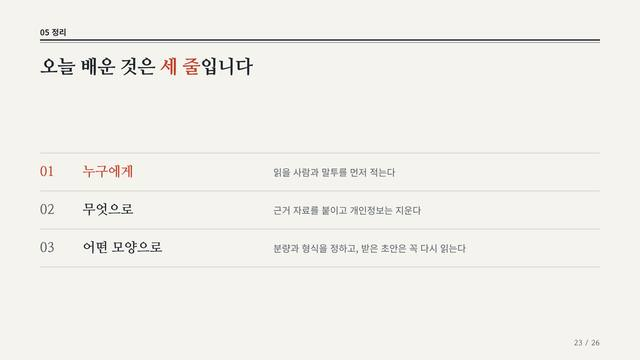
세 줄번호가 붙은 세 줄, 이름 + 설명
이럴 때 · 기억할 것이 서너 가지일 때
분량 · 3~5개
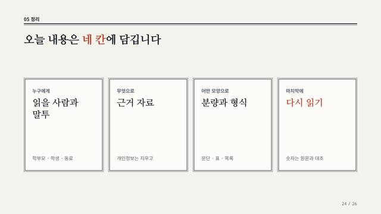
네 칸 정리 이 예시에 씀이름표가 붙은 네 칸
이럴 때 · 누가 · 무엇을 · 언제처럼 항목이 정해져 있을 때
분량 · 3~4칸, 칸마다 2줄
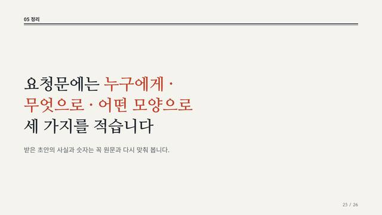
한 문장화면 가운데 큰 한 문장과 받치는 말
이럴 때 · 한 줄로 줄일 수 있을 때
분량 · 40자 이하 한 문장 + 1줄
아래 요청문을 복사해 발표 내용과 함께 AI 대화창에 붙여 넣으세요. 주소만 건네는 것으로는 적용이 끝나지 않습니다. AI가 구성안을 먼저 보여 주면 확인한 뒤 만들게 하세요.
제가 올린 발표 내용에 '전통 공예·문양' 스타일(ID: H)을 적용해 발표 HTML 파일 하나로 만들어 주세요. 1. 적용 안내 읽기: https://szxv7704-dot.github.io/design-reference-gallery/kit/H.md (디자인 규칙 · 구성별 코드 · HTML 뼈대가 들어 있습니다) 2. 완성 예시 보기: https://szxv7704-dot.github.io/design-reference-gallery/kit/H-set.html (10장: 표지 · 흐름 · 개념 · 비교 · 절차 · 사례 · 실습 · 수치 · 요약 · 마무리) 구성 모음: https://szxv7704-dot.github.io/design-reference-gallery/kit/H-var.html (역할마다 배치가 다른 구성 셋. 예시의 조합을 따라 하지 말고 제 내용에 맞는 구성을 골라 주세요) 3. 유지할 것: 한지 바탕에 먹 명조 / 면마다 쌍변(굵은 선 + 가는 선) / 주홍은 인장처럼 한 곳 4. 바꿔도 되는 것: 막새(섹션) 수는 5개까지 / 강조할 칸 5. 피할 것: 그림자 · 둥근 모서리 / 문양을 새로 그려 넣기 지킬 것: - 자료를 실제로 열어 읽은 뒤에 적용해 주세요. 주소를 열 수 없으면 읽은 척하지 말고 열 수 없다고 말해 주세요. - 먼저 장마다 "전하려는 것 · 고른 구성 · 제목"을 표로 보여 주고, 제가 확인하면 만들어 주세요. - 스타일은 하나만 쓰고, 장마다 내용에 맞는 구성을 고릅니다. 한 장에 구성 하나. - 예시에 들어 있는 기관명 · 수치 · 사례는 가상입니다. 제 발표에 가져오지 마세요. 제가 주지 않은 숫자를 지어내지 마세요. - 내용이 많으면 글자를 줄이지 말고 장을 나눠 주세요. 제 핵심 내용을 임의로 빼지 마세요.
kit/img/)처마 끝 수막새 #58표지만 있음 가까운 스타일: 전통 공예·문양